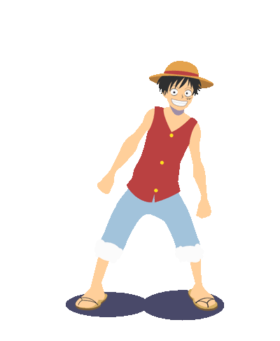

O pirata Monkey D. Luffy e sua tripulação exploram um mundo fantástico de oceanos infinitos e ilhas exóticas em busca do maior tesouro do mundo. Luffy tem apenas um objetivo: se tornar o próximo Rei dos Piratas.

Selecione um personagem:

Classe do personagem
Descrição do personagem
Cristhian Ruescas
Diego Paulo
Emison Dias
Gabriel Coutinho